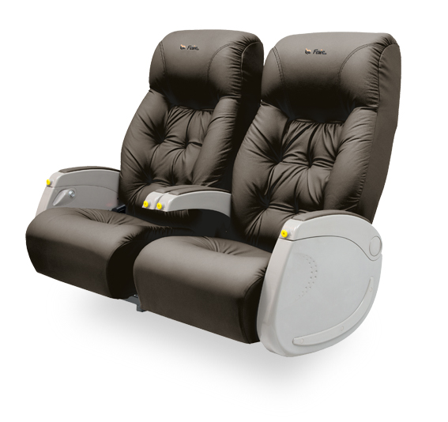
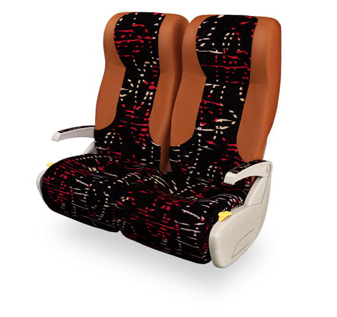
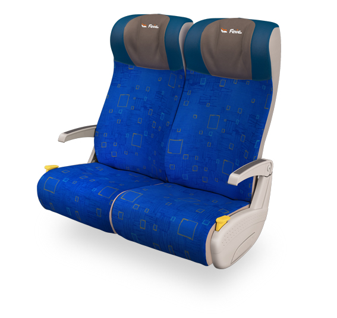
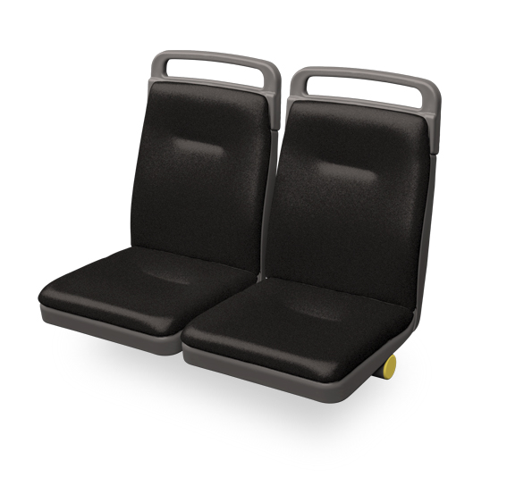

CATALOGO
Contamos con amplio catalogo de asientos, estos estan diseñados para garantizar la mayor comodidad tanto para viajes de poca duracion asi como viajes de larga distancia.
Ejecutivo
Asientos concebidos para viajes de largos recorridos, donde el pasajero debe contar con diversas opciones de servicio a bordo. El mayor ancho por pasajero, el respaldo de máxima reclinación y el apoyapiernas, permiten lograr una posición ergonómica, relajada y cómoda a la hora de descansar. Los asientos Enterprise poseen un sistema de reclinación hidráulica que les permite regular múltiples posiciones en forma suave y segura. Se ofrecen variadas opciones de tapicería, en diversos colores y texturas.
Semi cama
Asientos dise+ñados para viajes de larga distancia, pensados para que el pasajero disfrute de su recorrido. La adecuada reclinación del respaldo junto con el apoyapiernas, proporcionan la comodidad ideal para este tipo de viajes. Los asientos Moonraker están provistos de un sistema de reclinación hidráulica que les permite regular múltiples posiciones en forma suave y segura. Están disponibles en variadas opciones de tapicería y en diversos colores y texturas.
Larga Distancia
Asientos creados para prestar servicios en recorridos de media y larga distancia dedicados a turismo, transporte de línea y midi buses. El logrado diseño ergonómico le permite al pasajero posicionarse de manera ideal para lograr un viaje placentero. Los apoyabrazos rebatibles permiten una mayor comodidad para el acceso. Los asientos Discovery están provistos de un sistema hidráulico que posibilita una regulación suave y segura de la reclinación del respaldo.
Urbano
Asientos creados para prestar servicios urbanos. Lo caracteriza su bajo mantenimiento y su alta vida útil.